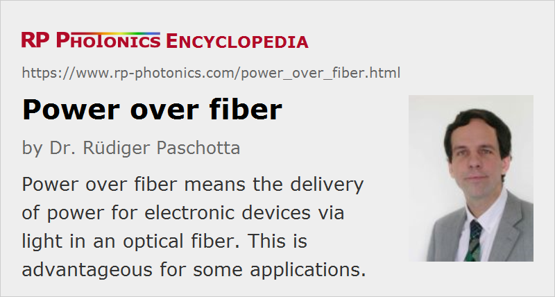

Power over Fiber
Definition: delivery of power for electronic devices via light in an optical fiber
German: Leistungsübertragung über Glasfasern
Category: fiber optics and waveguides
How to cite the article; suggest additional literature
Author: Dr. Rüdiger Paschotta
Optical fiber cables can be used for transmitting optical power from a source to some application. The term power over fiber or photonic power implies that the optical power is generated from electric power with a laser diode and at the end converted back to electrical power for some electronic device. That conversion can be done with a photovoltaic cell, i.e., a semiconductor device based on a material such as gallium arsenide, indium phosphide, or indium gallium arsenide. A typical system contains a laser diode emitting a few watts of optical power, a multimode fiber of a few hundred meters length, and a photovoltaic cell with an active area of several square millimeters.
Although an insulated copper wire is a simpler technology for transferring electric power, power over fiber offers advantages in specific situations:
- Non-conducting fiber cables (based on glass fibers or plastic fibers) can be installed where high electric voltages exists. For example, a fiber can transmit power for a current transducer in a high-voltage transmission line. Such current sensors with an optical power isolator can replace bulky transformer systems.
- The insulating property is also useful when a device (e.g. some radio signal receiver) is connected to an antenna, which could be hit by lightning. There is then no risk that the lightning is transmitted via the cable.
- Optical delivery of power avoids any sensitivity to strong magnetic fields (e.g. in magnetic resonance imaging) and to electromagnetic interference. Conversely, no electromagnetic radiation can be emitted, which might disturb other devices.
- There is no risk that explosive materials (e.g. in a fuel tank of an airplane) can be ignited, as could occur e.g. via an electric spark.
- In a system for optical fiber communications, there may be spare fibers which can be used for transmitting power when an electrical connection does not exist.
- A fiber can have a far lower weight than an electrical cable, and may tolerate higher temperatures.
- The same fiber may be used to send back data e.g. from a sensor, using some other wavelength channel.
Therefore, a number of applications can be envisaged in areas such as industrial sensors, aerospace, and optical communications.
Obvious disadvantages are the cost of optical components and the limited potential in terms of available power and conversion efficiency. There may also be a laser safety issue associated with several watts of optical power, which can leave the fiber when it is broken.
Choice of Wavelength and Power Efficiency
For short-range transmission, laser diodes emitting around 750–850 nm can be used in combination with GaAs-based photovoltaic cells. The power efficiency of a photovoltaic cell can easily be around 40–50%, i.e. significantly higher than for a normal solar cell, because the photon energy of the light is well matched to the band gap energy of the photovoltaic cell. The electrical-to-electrical efficiency can then be of the order of 20–30% for systems with a short fiber.
Optical losses in the fiber, mostly due to scattering, limit the transmission distance and power efficiency of the system. Longer transmission distances (possibly several kilometers) can be realized with systems operating at longer optical wavelengths, because this drastically reduces Rayleigh scattering.
Suppliers
The RP Photonics Buyer's Guide contains 3 suppliers for power over fiber systems.
Questions and Comments from Users
Here you can submit questions and comments. As far as they get accepted by the author, they will appear above this paragraph together with the author’s answer. The author will decide on acceptance based on certain criteria. Essentially, the issue must be of sufficiently broad interest.
Please do not enter personal data here; we would otherwise delete it soon. (See also our privacy declaration.) If you wish to receive personal feedback or consultancy from the author, please contact him e.g. via e-mail.
By submitting the information, you give your consent to the potential publication of your inputs on our website according to our rules. (If you later retract your consent, we will delete those inputs.) As your inputs are first reviewed by the author, they may be published with some delay.
See also: fibers, fiber cables, laser diodes, fiber optics
and other articles in the category fiber optics and waveguides
|  |
If you like this page, please share the link with your friends and colleagues, e.g. via social media:
These sharing buttons are implemented in a privacy-friendly way!